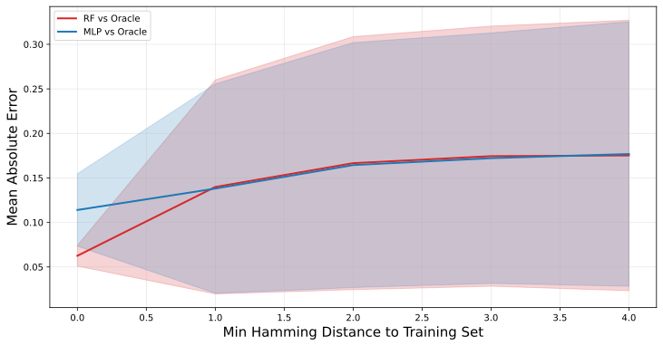
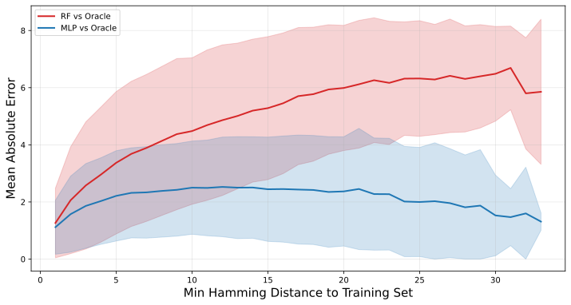

under Distributional Shift
Biological sequence design — finding DNA or protein sequences with high fitness — is central to drug discovery, enzyme engineering, and synthetic biology.
Surrogate models approximate expensive experimental measurements (oracle calls) to guide optimization cheaply.
But optimizers actively push candidates into out-of-distribution (OOD) regions far from training data. Do surrogates remain reliable there?
TFBind8 — DNA 8-mers, fully measured binding activity between transcription factors. All possible designs are evaluated.
GB1 — Protein G domain B1, single and double mutations labeld with IgG-FC binding strength. Our labels come from a MLP oracle trained on the original labels.
MLP — Multi-layer perceptron with single layer of 100 units and ReLU activation. Parametric model, extrapolates more agressively into unseen regions.
RF — Random Forest; non parametric ensemble, aggreagate across correlated decision trees, conservative predicitons.
- SMW — Single-mutant walk; random mutations scored by surrogate. Simple baseline.
- RL-LSTM — Pre-trained generative LSTM fine-tuned via goal-directed RL with surrogate reward; broader exploration.
- GFlowNet — Samples proportional to fitness score; promotes candidate diversity (Jain et al., 2022).
[2] Angermueller et al. (2020). Population-Based Black-Box Optimization. ICLR.
[3] Trabucco et al. (2022). DesignBench. ICML.
[4] Kim et al. (2025). Improved Off-Policy RL in Biological Sequence Design.
[5] Brookes & Listgarten (2020). Design by Adaptive Sampling.
Surrogates are trained on the bottom 50% by fitness sequences, but optimizers push candidates further away. We measure generalization by computing predictions on holdout sequences stratified by minimum Hamming distance from the training set, then comparing to oracle scores.
GB1 note: exhaustive enumeration is infeasible. 56k test sequences spanning a wide range of Hamming distances are created by mutation, enabling controlled OOD evaluation.


| Model | Spearman ρ | Bias ± Std | Var |
|---|---|---|---|
| RF | 0.368 | 0.134 ± 0.166 | 0.028 |
| MLP | 0.270 | 0.122 ± 0.170 | 0.029 |
| Model | Spearman ρ | Bias ± Std | Var |
|---|---|---|---|
| RF | 0.319 | 3.920 ± 2.920 | 8.524 |
| MLP | 0.792 | 1.834 ± 1.980 | 3.922 |
Dataset complexity matters. On TFBind8 (simpler landscape), RF outperforms MLP in rank correlation, consistent with RF's conservative ensemble averaging preventing over-extrapolation. On GB1 (epistatic landscape), MLP surpasses RF — suggesting the MLP's parametric flexibility is beneficial when the fitness landscape has non-trivial structure.
Bias vs. Variance tradeoff: MLP outperforms RF as RF shows higher variance and bias on GB1. Both models systematically underestimate OOD fitness — trained only on the bottom 50% of sequences, they have never seen truly high-fitness examples and regress toward the low-fitness mean.
We compare three generation approaches — SMW, RL-LSTM, and GFlowNet — on their ability to find genuinely high-fitness sequences using an MLP surrogate as the reward signal. All candidates are scored by the ground-truth oracle after optimization.
10 independent runs · 15 iterations per optimizer–dataset combination. Metric: maximum oracle score achieved across all generated candidates per run.
| Optimizer | TFBind8 | GB1 | ||
|---|---|---|---|---|
| Max ± std | Iter ± std | Max ± std | Iter ± std | |
| SMW | 0.859 ± 0.101 | 6.2 ± 2.7 | 1.240 ± 0.672 | 9.7 ± 3.2 |
| RL-LSTM | 0.927 ± 0.064 | 4.8 ± 1.8 | 9.315 ± 0.000 ⚠ | 4.0 ± 0.0 |
| GFlowNet | 0.968 ± 0.014 | 8.5 ± 4.3 | 8.209 (n=1) | 5.0 (n=1) |
TFBind8: GFlowNet ≈ RL-LSTM > SMW in max score (0.968 vs 0.927 vs 0.859). RL-LSTM finds its best sequence earliest (iter 4.8), suggesting aggressive surrogate exploitation — but on this simpler landscape the surrogate is reliable enough that exploitation still yields genuinely good sequences.
GB1: RL-LSTM scores 9.315 ± 0.000 — far above the dataset maximum of 3.60 and with zero variance across 10 runs. Identical trajectories in every run confirm complete mode collapse: the policy always finds the same surrogate exploit. The oracle itself extrapolates beyond its training range, making 9.315 an unreliable ground truth. GFlowNet reaches 8.209 in a single run — promising but inconclusive without more runs.